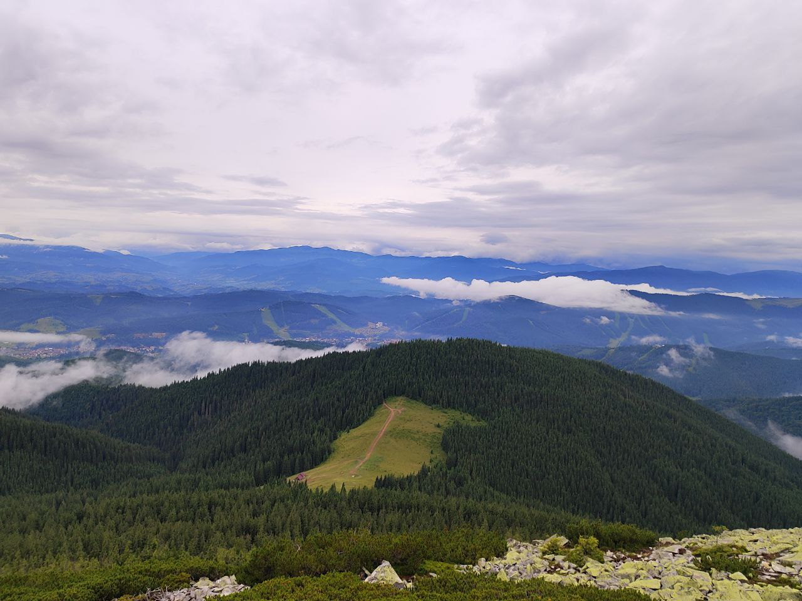

Про мене
- Любінський Олександр Юрійович
- вул. Величковського 1/А
- +380962034299
- oleksandrlubinskij@gmail.com

Мене звати Олександр. Я навчаюся у сфері комп’ютерних наук та цікавлюся програмуванням, веб-розробкою та створенням різних застосунків. Особливу увагу приділяю мові програмування C++ та роботі з алгоритмами і структурами даних. Також люблю працювати з базами даних, створювати веб-сайти та пробувати нові технології.
У вільний час люблю слухати тяжкий метал, дивитися фільми жахів та читати трилери. Це допомагає мені відпочити від навчання і зарядитися новими емоціями. Крім цього, займаюся спортом, адже вважаю, що фізична активність допомагає краще концентруватися на навчанні та проєктах.
Я живу тут
Моя улюблена пісня
Моя поїздка у Карпати

